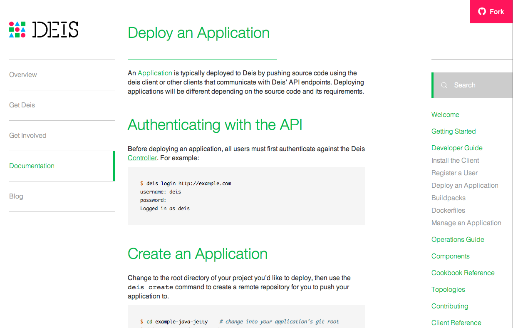

About Deis
- First Docker PaaS
- "Private Heroku"
- 100% open source
- ~40 contributors, 4 full-time devs
- Python & Go
About Me
- 15+ years in IT ops and systems programming
- Worked at Intuit, Temboo and as a freelance consultant
- Early and frequent Docker contributor
Why Docker?
- Density
- Portability
Why Deis?
Docker is not enough
Developer Workflow
- Create applications
- Push code or Docker images
- Set environment variables
- Manage releases and rollbacks
- Run ephemeral containers
- View logs
- Scale containers
- Collaborate with a team
Division of Responsibility
- Developers own the containers
- Operations own the platform
What's New with Deis?

How does it work?
Deploying Deis
Provision a Controller
$ vagrant up # local dev
$ contrib/ec2/provision-ec2-cluster.sh # ec2
$ contrib/rackspace/provision-rackspace-cluster.sh # rackspace
Register an Admin User
$ pip install deis
$ deis register deis-controller.fqdn
Configure a Cluster
$ deis init dev deisapp.com --hosts=host1,host2,host3 --auth=~/.ssh/key.pem
Unleash the Developers
Operating Deis
- SSL certificates
- Drain logs
- Configure monitoring
- Scale hosts
What's Next?
- Fleet API
- CI/CD Pipelines
- Service Gateway (add-ons)
- Platform hardening